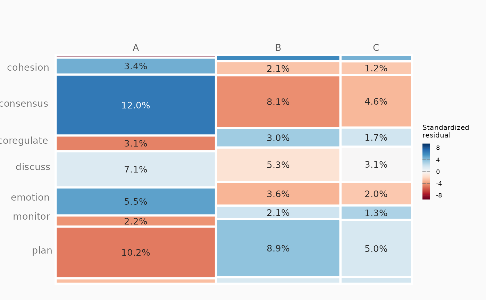

Two-variable mosaic analysis (chi-square test + flat mosaic)
Source:R/mosaic_analysis.R
mosaic_analysis.Rdmosaic_analysis() tests the association between two categorical columns
of a data frame and draws it as a mosaic. It builds their contingency
table, drops sparse categories (fewer than min_count rows), runs a
Pearson chi-square test (or Fisher's exact test), computes Cramer's V
with an effect-size label, and draws a flat ggplot2 mosaic in which tile
area is the cell count and the fill is the cell's standardised
residual. The per-cell results come as a data frame, one row per cell.
The p-value tests the null hypothesis that the two variables are
independent; with large samples almost any departure is significant, so
read Cramer's V for the size of the association. The label follows
Cohen's (1988) thresholds for the table's degrees of freedom,
min(rows, columns) - 1: 0.10 / 0.30 / 0.50 for small /
medium / large at 1, 0.07 / 0.21 / 0.35 at 2, 0.06 / 0.17 / 0.29 at 3,
and 0.05 / 0.15 / 0.25 above (Cohen's w divided by the square root of the
degrees of freedom); a V below the small threshold is labelled
"negligible". The residuals are chisq.test()'s standardised
residuals, roughly standard normal under independence, so one beyond
about +-2 marks a cell that holds more (or fewer) rows than independence
predicts; with many cells, some pass that line by chance.
Usage
mosaic_analysis(
data,
var1,
var2,
min_count = 10L,
test = c("chisq", "fisher"),
percentage_base = c("total", "row", "column"),
tile_label = c("count", "percent", "residual", "category", "none"),
title = "",
...
)
# S3 method for class 'mosaic_analysis'
plot(x, ...)
# S3 method for class 'mosaic_analysis'
print(x, ...)
# S3 method for class 'mosaic_analysis'
summary(object, ...)Arguments
- data
A data frame holding the two variables. Rows missing either of them are left out; a
var1orvar2that is not a column ofdata, or no complete rows, raises an error.- var1
The name of the first variable, drawn as the mosaic's columns (column width is its marginal share).
- var2
The name of the second variable, stacked within each column.
- min_count
The smallest number of rows a category must have to be kept. Categories of either variable with fewer rows in the full table are dropped, in one pass, before the test. Default
10. If fewer than two categories of either variable remain, an error is raised.- test
The test reported:
"chisq"(default) for Pearson's chi-square test, or"fisher"for Fisher's exact test: exact for a 2 x 2 table, and otherwise with a p-value simulated from 10,000 tables (so it changes with the random seed and cannot fall below 1/10,001). Cramer's V and the residuals always come from the chi-square statistic.- percentage_base
What the
pctcolumn and the"percent"tile label are a percentage of:"total"(default) the whole table,"row"each level ofvar1,"column"each level ofvar2.- tile_label
What to print inside each tile:
"count"(default),"percent","residual","category"(thevar2level) or"none".- title
The plot title. Default
""(none).- ...
Further styling for the flat mosaic:
col_label_side,row_label_side,col_label_angle,row_label_angle,show_legend,legend_position,legend_size,legend_title,label_size,range,palette,min_label_handmin_label_w(andpct_base, which overridespercentage_basein the plot only; thepctcolumn always followspercentage_base). The fill is the ColorBrewer RdBu ramp unlesspaletteis given. Column labels turn vertical when there are more than 6 columns;col_label_anglesets an angle. Any other name raises an error. For theplot()method: the same styling andtitle, overriding what the fit stored; for theprint()andsummary()methods: ignored.- x
- object
For the
summary()method: amosaic_analysis.
Value
A mosaic_analysis object. print() shows the sample size, the
test, Cramer's V with its label and the dropped categories, and returns
the object invisibly; summary() returns the per-cell data frame (the
counts table below) with the one-row test summary attached as the
attribute "stats"; plot() draws the mosaic on the active device,
with new styling if given, and returns the ggplot invisibly. The
object is a list with:
- plot
The flat mosaic, a
ggplot. Building the object does not draw it.- counts
A data frame with one row per (
var1,var2) cell: the two variables (named after them),observed,expected,residual(the standardised residual) andpct(onpercentage_base);expectedandresidualare rounded to 3 decimals,pctto 2.- stats
A one-row data frame:
test,statistic,df,p_value,cramers_v,effect_sizeandn, rounded (statisticandcramers_vto 3 decimals,p_valueto 4 significant digits).statisticanddfareNAfor Fisher's test.- test
The
htestobject of the test reported.- cramers_v, effect_size
Cramer's V, unrounded, and its label.
- table
The filtered contingency table.
- removed
The dropped categories, as a list with
var1andvar2.- n_original, n_filtered
The number of complete rows before and after the sparse categories are dropped.
- vars
The two variable names, as
c(var1 = , var2 = ).- plot_parts, plot_args
The residual matrix, the table and the styling, kept so
plot()can redraw without testing again.
Methods
plot.mosaic_analysis()redraws the flat mosaic from the stored contingency table and residuals, so the styling can change without the test being run again. Any flat-mosaic styling argument (tile_label,pct_base,col_label_side,legend_size, ...) can be overridden through....
References
Cohen, J. (1988). Statistical power analysis for the behavioral sciences (2nd ed.). Lawrence Erlbaum.
See also
mosaic_plot for the network/table mosaic (which also
accepts style = "flat").
Examples
data(group_regulation_long, package = "Nestimate")
res <- mosaic_analysis(group_regulation_long, "Course", "Action",
min_count = 20)
res
#> Mosaic analysis: Course x Action
#> N = 27533 (filtered from 27533); table 3 x 9
#> Chi-square: X2 = 233.560, df = 16, p < 2.2e-16
#> Cramer's V = 0.065 (negligible)
head(summary(res))
#> Course Action observed expected residual pct
#> 1 A adapt 140 249.303 -9.430 0.51
#> 2 B adapt 261 193.688 6.059 0.95
#> 3 C adapt 153 111.009 4.502 0.56
#> 4 A cohesion 923 827.560 4.631 3.35
#> 5 B cohesion 590 642.945 -2.680 2.14
#> 6 C cohesion 326 368.495 -2.563 1.18
# \donttest{
plot(res, tile_label = "percent")

# }